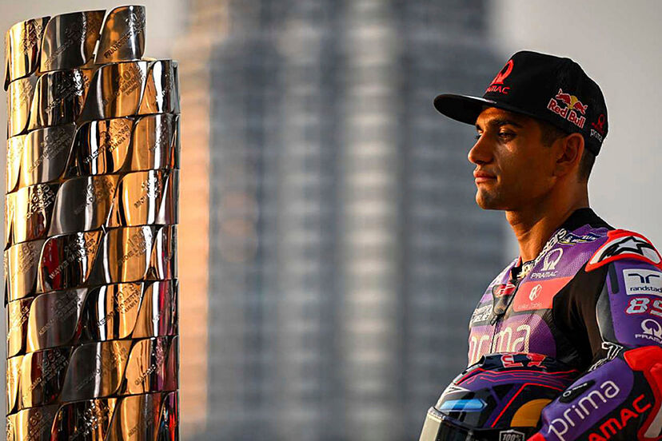
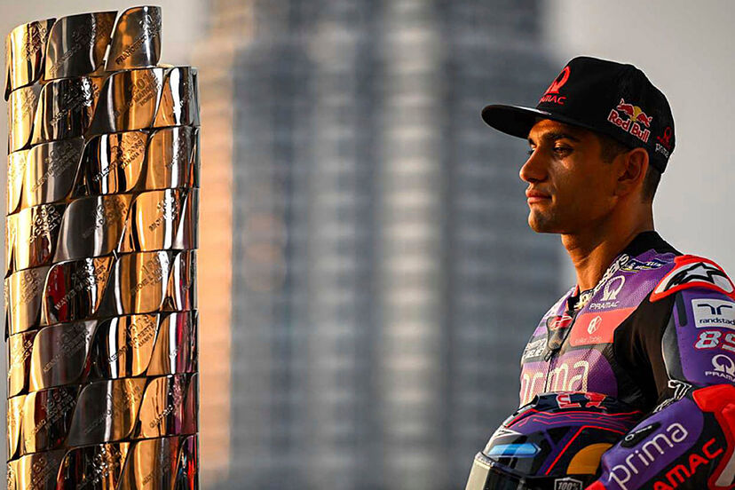
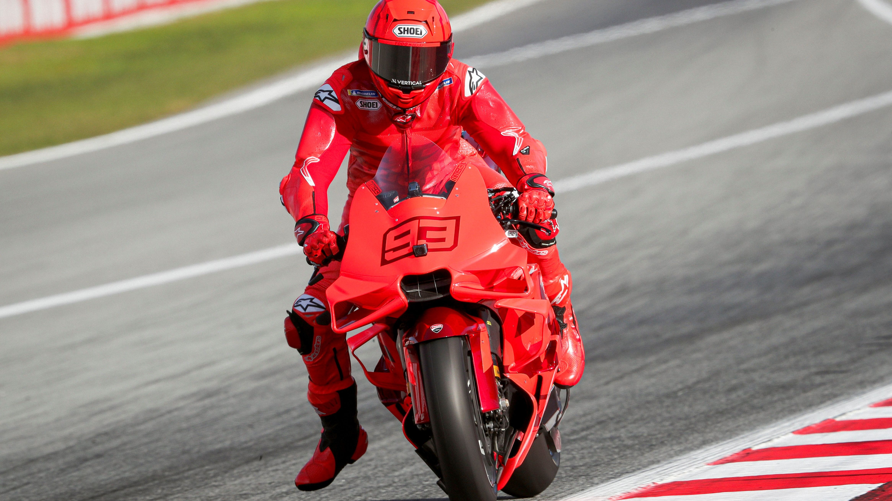
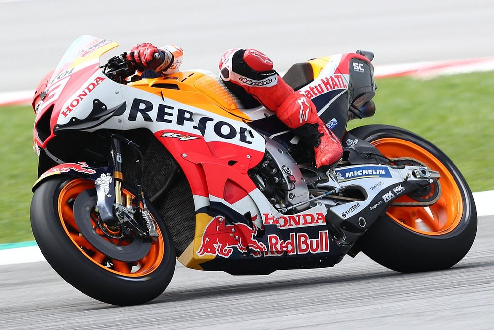

UN NUEVO REY
El mundo recibe al nuevo campeón de la categoría reina del motociclismo, Jorge Martín.
Redacción: Hace 8 horas El mundo recibe al nuevo campeón de la categoría reina del motociclismo, Jorge Martín.
Redacción: Hace 8 horas Marc Márquez desembarca en su nueva aventura en Ducati, en busca de un nuevo y ansiado título.
Redacción: Hace 4 horas La histórica alianza separa sus caminos tras 30 años de éxitos juntos y un triste final.
Redacción: Hace 2 horas 